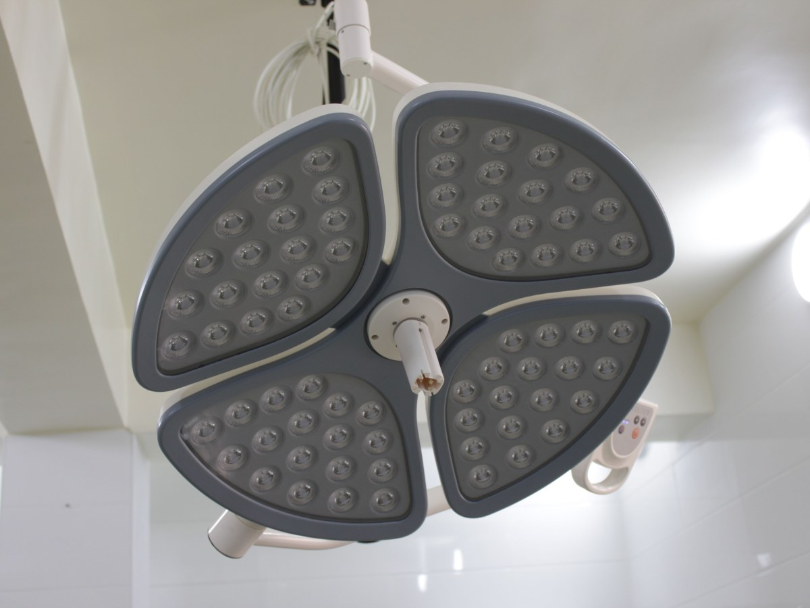
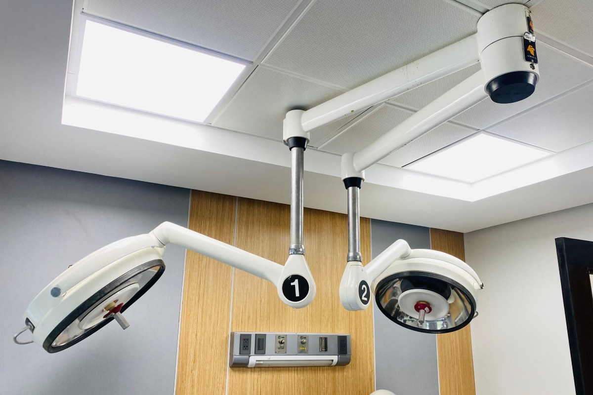
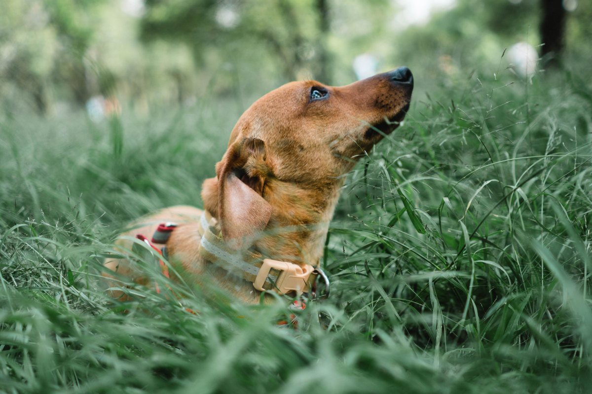

Pucón · Camino Internacional 1870
Sin tener que viajar hasta Temuco.
Hospital veterinario en Pucón, con 255 reseñas en Google.
- 255reseñas en Google
- 4,5de nota promedio
- 1870Camino Internacional, Pucón
- 0web: integravetpucon.cl ya no existe
La pregunta antes de subir al auto
¿Qué llevo si mi mascota se enferma?
Cuatro cosas que ayudan en la consulta.
- 01
Un video
Del síntoma, si ya pasó.
- 02
El carnet
Vacunas y controles anteriores.
- 03
Los remedios
Lo que toma o le dieron en casa.
- 04
Correa o jaula
Para que llegue tranquila.
Antes de salir, avise por WhatsApp qué le pasa.
En Pucón, sin viajar a Temuco.
En Camino Internacional 1870
Lo que se resuelve en un hospital
-
Lo primero
Consulta
Revisión y diagnóstico.
-
Para ver adentro
Radiografías
Huesos, tórax y abdomen.
-
Resultados rápidos
Laboratorio
Exámenes de sangre.
-

Cuando hay que operar
Cirugía
En pabellón.
-
Después
Hospitalización
Con control del equipo.
-

Cada año
Vacunas
Perros y gatos.
Los servicios reales los confirma el hospital.
255 reseñas y un 4,5.
El hospital veterinario más comentado de Pucón
Perros, gatos y volcán
Cuidar en Pucón



Fotos de referencia: el hospital de verdad lo muestra su equipo.
Cómo llegar
Camino Internacional 1870, Pucón
- Dirección
- Camino Internacional 1870
- +56 9 9325 9035
- Reseñas
- 255 en Google, nota 4,5
- Horario
- Falta el horario
Sobre la ruta al paso Mamuil Malal: avise antes de llegar.
Camino Internacional 1870, Pucón Abrir en Google Maps
Para el dueño
Qué es real y qué falta
Lo verificado
El nombre, la dirección, el WhatsApp, las 255 reseñas con 4,5 y que integravetpucon.cl ya no existe.
Lo de ejemplo
La lista de qué llevar, los servicios y las fotos.
Lo que falta
El horario, las urgencias, los servicios reales y fotos del hospital.